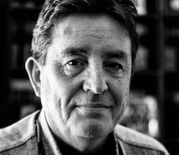

Cristina Morales
A pesar de su juventud (nació en Granada en 1985), Cristina se ha ganado que la consideren como una de las mayores promesas de la literatura. Aunque algunos ya no la consideran promesa sino una escritora con un recorrido y premios que serían la envidia de muchos otros de más edad.
Cristina Morales se licenció en Derecho y Ciencias Políticas en la Universidad de Granada y trabaja como intérprete jurídica, pero eso no le impide crear obras de gran calado social. Si bien ha publicado varias obras que le han granjeado varios premios, nos centraremos en su obra más exitosa hasta la fecha: Lectura fácil.
- Lectura fácil
- La Multipremiada obra de Cristina Morales (Premio Herralnde de Novela y Premio Nacional de Narrativa) fue publicada en 2018. La novela está protagonizada por cuatro mujeres con diversos grados de discapacidad intelectual y en ella se aprecia claramente el estilo combativo de la autora. Esta obra es un alegato al propio cuerpo, al cuerpo femenino y a las grandes capacidades de los conocidos como discapacitados.
Tras el gran éxito cosechado por Lectura fácil, la editorial ha vuelto a reeditar sus dos novelas anteriores: Los Combatientes e Introducción a Teresa de Jesús. La primera de ellas recogía el espíritu del 15-M, mientras que la segunda (que originalmente se titulaba Malas palabras) se trata de un supuesto diario escrito por la mística abulense, en una versión más libre y feminista de sí misma.
Puedes consultar las reseñas de otros autores actuales en los siguientes enlaces:
- Luis García Montero
 Cristina Morales
Cristina Morales